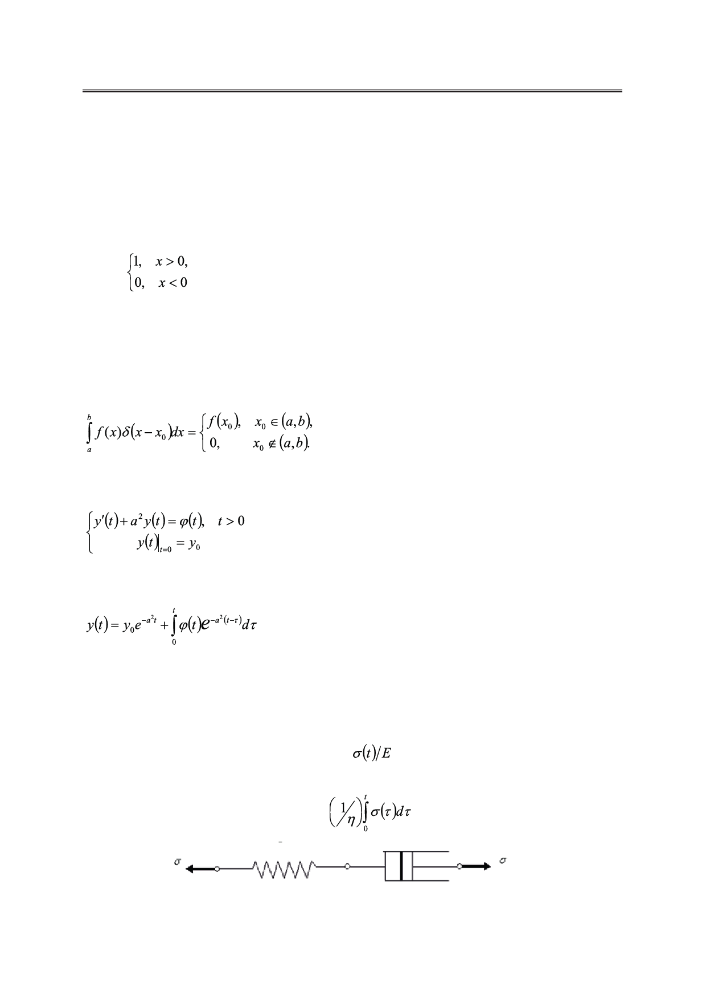

В.Д. Карлов
решений относительно напряжения при заданной деформации или деформации при за-
данном напряжении традиционно является система кусочно-гладких функций, каждая
из которых описывает процесс в своем интервале времени. Однако, по нашему мнению,
можно иначе описать эти решения, используя единое функциональное соотношение для
всех t >0.
Используем для расчетов обобщенные функции [4]:
единичную функцию Хэвисайда
Н(х) =
(2)
и дельта-функцию Дирака
При этом:
δ(х) = Нʹ(х).
(3)
Используем также предложенное автором [4] решение задачи Коши
(4)
в виде компактного соотношения
.
(5)
Модель Максвелла является наиболее простой моделью, описывающей поведение
вязкого тела, осложненного упругостью. В модели Максвелла упругие и вязкие элементы
соединены последовательно, как это показано на рис. 1, напряжение σ(t), приложенное к
модели, вызывает деформацию в каждом элементе:
упругую деформацию пружины
ε1(t) =
и деформацию вязкого элемента
ε2(t) =
.
Рис. 1. Последовательное соединение демпфера и пружины.
Российский технологический журнал 2017 Том 5 № 5
53